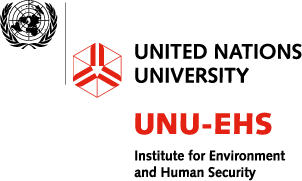
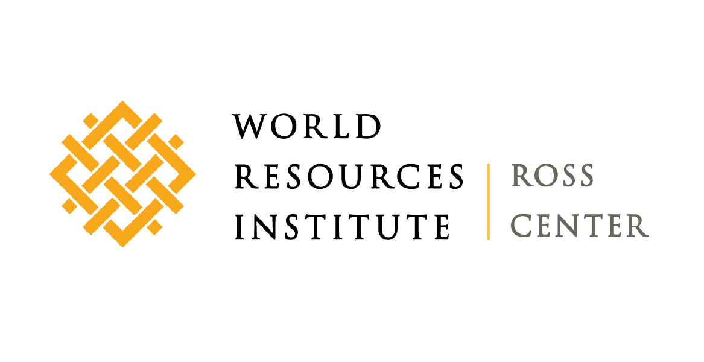
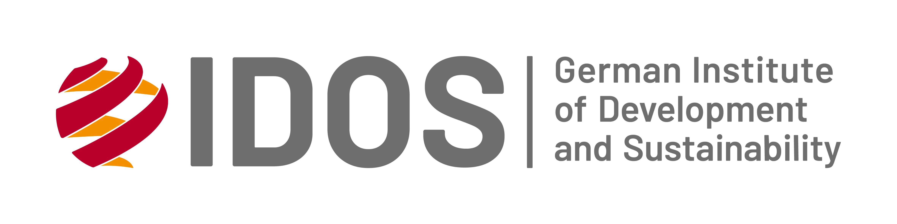
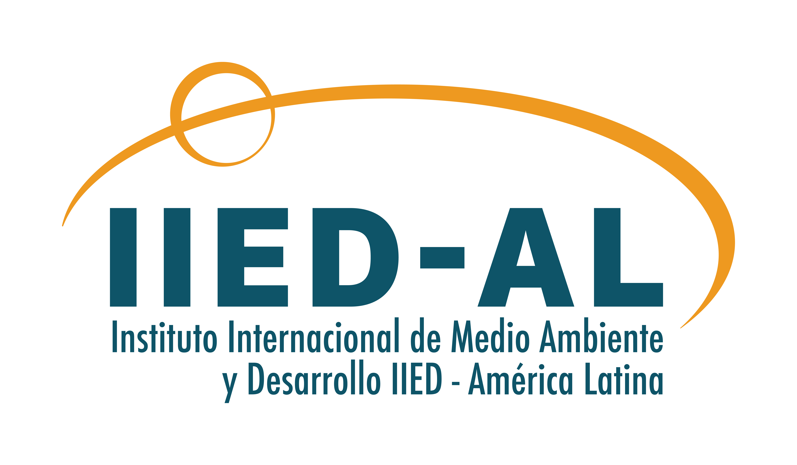

La misión del Instituto de Medio Ambiente y Seguridad Humana (UNU-EHS) es llevar a cabo investigaciones de vanguardia sobre los riesgos y la adaptación relacionados con los peligros medioambientales y el cambio global. La investigación del instituto promueve políticas y programas para reducir estos riesgos, teniendo en cuenta la interacción entre los factores medioambientales y sociales.


El Instituto de Recursos Mundiales (WRI, por sus siglas en inglés) es una organización técnica global que convierte las grandes ideas en acciones: Establecemos vínculos entre la conservación del medio ambiente, las oportunidades económicas y el bienestar humano.

El Instituto Alemán de Desarrollo y Sostenibilidad (IDOS), con sede en la ciudad de Bonn de las Naciones Unidas, es uno de los institutos de investigación y centros de estudios líderes en el mundo sobre temas de desarrollo sostenible global. El instituto interdisciplinario combina investigación , consultoría y educación.

La misión del IIED - América Latina es contribuir al desarrollo de sociedades más justas, participativas, democráticas y sustentables. En particular, su acción institucional se focaliza en el mejoramiento de las condiciones de vida y el poder de decisión de los grupos poblacionales más vulnerables de América Latina y el Caribe, buscando influir en las políticas económicas, sociales y ambientales de los países de la región.